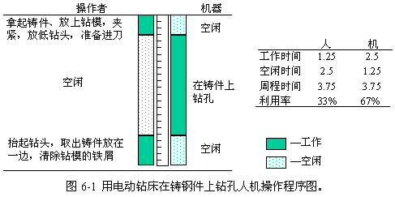

1 . 教学安排
2 . 操作分析的定义与类型
3 . 人机操作分析
 人机操作分析的意义与目的
人机操作分析的意义与目的
人机操作图的构成
人机操作程序图实例分析
闲余能量分析
4 . 联合操作分析
5 . 双手操作分析
6 . 思考与练习题
 返回课程学习首页
返回课程学习首页
人机操作图的构成
人机操作图有多种画法。一般来说，人机操作图由以下部分构成：
(1)以适当的线段长短代表时间比例。
(2)在纸上采用适当的间隔分开人与机，作出垂线。最左方为工人操作时的动作单元及垂线，在此垂线上按所取的时间比例，由上向下记录工人每一动作单元所需时间。当工人操作时用实线(或其他方式)表示，空闲用虚线(或其他方式)表示，机器的表示方法也同样。
(3)待人与机器的操作时间均已记录之后，在此图的下端将工人与机器的操作时间、空闲时间及每周期人工时数予以统计，供分析时参考。
例：用电动钻床在铸钢件上钻一个孔时，工人拿起铸件、放上钻模，夹紧，放低钻头，准备进刀，用时间0.5min，然后钻床开始在铸件上钻孔，用时间2.5min，等钻床钻好孔后，工人抬起钻头，取出铸件放在一边，清除钻模的铁屑，用时间0.75min。那么，可以画出如图6-1所示的人机操作程序图。
